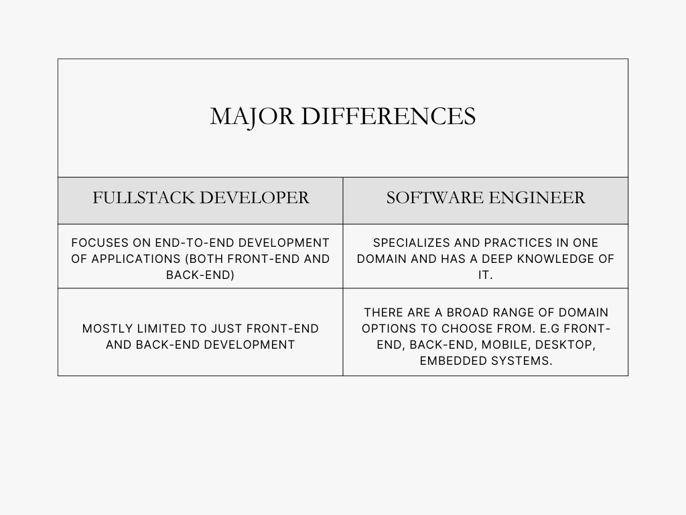

Have you ever heard the saying that all full-stack developers are software engineers, but not all software engineers are full-stack developers?
A full-stack developer is responsible for the user-facing side and the behind-the-scenes logic that makes everything work, while a software engineer may specialize in just one of these areas. Despite their differences, both roles require similar problem-solving skills, even though their toolkits may vary.
This article provides an in-depth discussion of what each role entails, their similarities and differences, the necessary skills, and the growth potential in these fields. It will also touch on salary ranges, help you determine which path fits you best, and provide roadmaps for your software engineering or full-stack development journey.
The table below summarizes the major differences between a full stack developer and software engineer
A full stack developer possesses the knowledge and technical skill sets to work proficiently in a software application’s front-end and back-end. The application’s front-end encompasses everything the user can see while interacting with it, i.e., the user interface. The back-end consists of the server-side logic, the database, and the server.
Let’s take a look at front-end and back-end development in greater detail.
The common languages used in front-end development include HTML, Cascading Style Sheets (CSS), and JavaScript. HTML defines the markup of the web page. CSS builds upon HTML and represents the style and format of the webpage. JavaScript is a programming language often used for front-end development and adds logic to your web page. You’ll find an excellent guide and roadmap to learning JavaScript on our platform.
Back-end development mainly involves creating API endpoints consumed by the application’s front-end. Some common back-end programming languages include C#, Java, Rust, Golang, and Python. Check out the back-end developer roadmap.
The necessary technical skills to be a full stack developer include:
A software engineer is a specialist with a deep understanding of software development, computer systems, and programming languages. They design and create software programs and applications that solve real-world problems. Software engineers are specialists who focus on a specific aspect of software development. They produce high-quality software solutions.
There are two primary types of software engineers: applications and systems software engineers.
Application software engineers: Client-focused software engineers design and develop software users interact with. They could be front-end, back-end, or full-stack developers. They also develop applications for operating systems such as iOS, Android, Windows, Linux, and many more.
Systems software engineers: These software engineers develop systems and networks that drive the user-facing applications developed by the application software engineers. They are specialists in either hardware or software engineering or both. They can also integrate different software products into a single platform; for example, DevOps engineers can use tools like Docker and Kubernetes to deploy and orchestrate applications.
System software engineers often serve as IT or system architects who design and enforce industry tech standards. They are experts in software design and mostly design back-end systems that users do not directly interact with.
Software systems are complex, and much thought goes into building them. Software engineers use their broad knowledge to break down these complex systems, and the usual software development life cycle looks like the following.